Peapod 用户手册 - 房东指南
版本： v0.19.0 最后更新： 2025年12月27日 平台： iOS（iPhone、iPad）
← 返回目录
👥 关于本手册：
本手册涵盖房东（房源所有者）和联合房东（管理日常运营的团队成员）。
联合房东角色： 负责大部分房源管理职责，包括房客沟通、预订管理、日历更新、房源维护和协调清洁。他们可以访问所有运营功能以确保日常运营顺畅。
联合房东权限： ✅ 编辑房源（描述、照片、设施、规则）、为指定房源与房客沟通、更新日历和可用性、查看和管理预订、与保洁员协调、报告问题
联合房东限制： 联合房东不能更改价格、访问收款/财务信息、邀请其他团队成员或删除房源。这些仍然是房东专属功能。
目录
- 5.1 导航 - 仪表板、房源、预订、消息、个人资料标签
- 5.2 创建房源 - 房源基础、位置、价格、照片、可用性、设施、规则
- 5.3 编辑房源 - 编辑价格与智能定价、可用性、照片与视频、酒店/青旅房型管理（5.3.4）
- 5.4 房源审核与批准流程 - 审核员审核、批准状态、两级审核系统、评价审核员
- 5.5 处理预订请求 - 接受/拒绝、即时预订、修改
- 5.6 团队管理 - 邀请联合房东/保洁员、管理角色、权限
- 5.7 房客沟通与评价 - 消息模板 + 评价与评分
- 5.8 收入与忠诚度 - 收入、提款、税务信息 + 忠诚度等级与奖励
- 5.9 房东资源
5. 房东与联合房东
5.1 导航
房东界面使用5标签底部导航栏。每个标签提供关键房东功能的访问。
5.1.1 仪表板标签
一目了然的绩效概览。监控收入、预订和入住率趋势。
关键指标（顶部卡片）： 已收款项（已转入银行）、待收入（入住后等待收款）、本月总预订（已确认数量）、本月当前入住率（已预订晚数%）
收入概览图表： 按月显示收入的柱状图，查看最近6个月，Y轴显示人民币金额（¥0k-¥4k），点击柱状图查看精确金额
入住率部分： 本月（当月入住率%，红色）、下月（下月入住率%，灰色）- 点击”查看日历”查看详细可用性
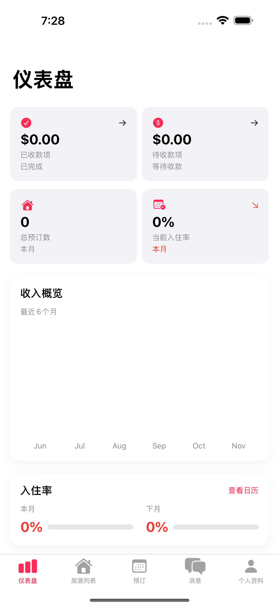
5.1.2 房源标签
房源标签现在包含两个子标签：房源（房源管理）和任务（清洁任务管理）。
房源子标签
在一个屏幕上管理所有房源。创建新房源、编辑现有房源并监控状态。
搜索与添加： 搜索栏按名称查找 + 粉色”+“按钮（右侧）创建新房源
筛选标签： 全部、待处理编辑、待审核、请求编辑、上线、您暂停、被暂停
房源卡片显示： 房源照片、标题、价格、位置、评分/评价数、状态徽章（绿色上线/黄色待处理编辑/蓝色待审核/橙色请求编辑/红色被暂停）、三点菜单
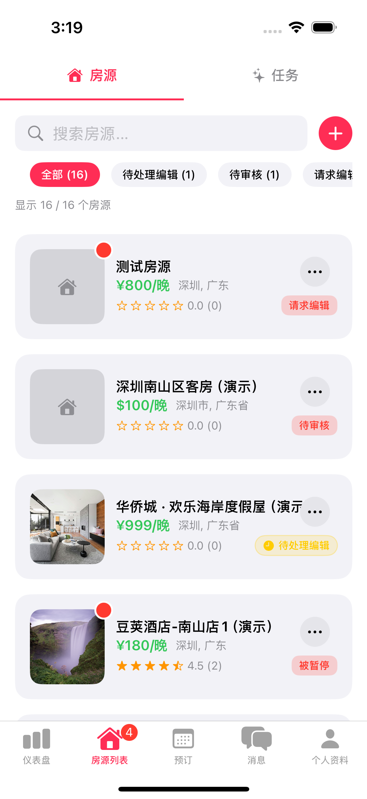
房源子标签：搜索栏带粉色添加按钮、状态筛选、房源列表
任务子标签
查看和管理所有房源的清洁任务。监控任务进度和保洁员工作状态。
任务概览卡片： 待处理（橙色）、进行中（蓝色）、今日完成（绿色）
筛选标签： 全部、待处理、进行中、已完成
任务卡片显示： 房源名称、状态徽章、进度条（如12/20）、优先级、截止时间、保洁员姓名、任务说明
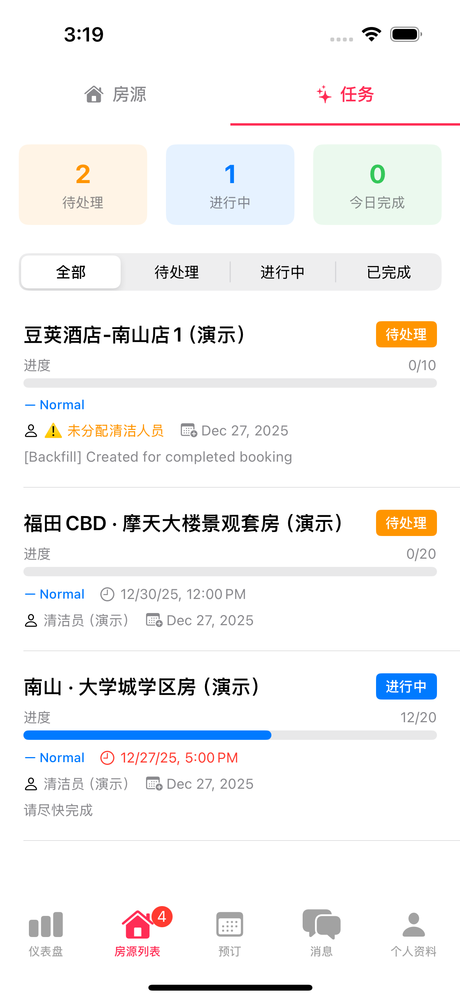
任务子标签：任务概览卡片、状态筛选、任务列表带进度条
5.1.3 预订标签
查看和管理所有房源的预订。追踪入住、收款和房客信息。
搜索与筛选： 搜索栏按房客姓名/房源/确认号查找 | 筛选标签：待处理、即将到来、已完成、全部
预订卡片显示： 房源照片、房源名称、旅客姓名、状态徽章（绿色已确认/橙色待确认）、入住/退房日期、旅客数量、收款金额（绿色）、确认号、三点菜单
刷新： 点击右上角刷新图标更新预订状态
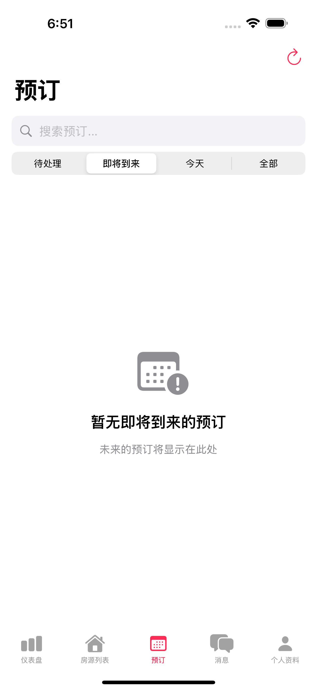
5.1.4 消息标签
与房客沟通预订事宜。按房源和预订日期组织查看所有对话。
搜索： 搜索栏按房客姓名或房源查找对话
对话列表： 房客头像（圆形）、房源名称（粗体）、预订日期（灰色）、最后消息预览、时间戳（如”1小时前”）、未读指示器（数量徽章）
撰写新消息： 点击铅笔图标（右上角）开始新对话
消息组织： 最近对话在顶部，按房源分组，显示预订上下文便于参考
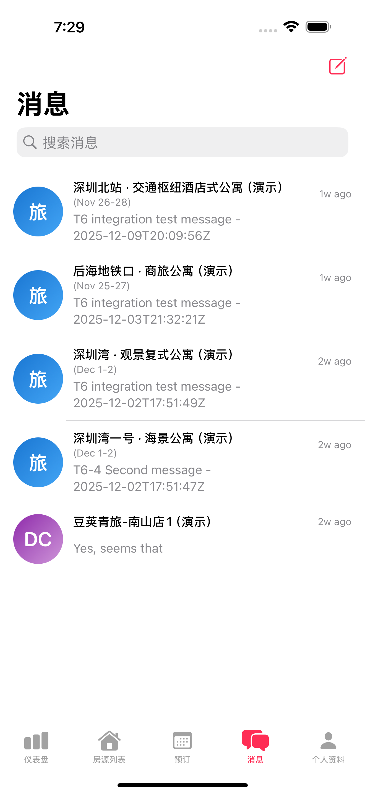
5.1.5 个人资料标签
您的账户设置、偏好和收款配置。在房东和房客角色之间切换。
个人资料头部：
- 头像（圆形，点击更改）
- 姓名（如”Jennifer Host”）
- 角色徽章（如”房东 👑“带皇冠图标）
- 切换角色按钮（蓝色）- 在房东和房客视图之间切换
- 统计显示：
- 行程 - 作为房客的总预订
- 评价 - 收到的评价数
- 会员年数 - 账户年龄
账户设置： 账户（邮箱/密码）、偏好设置（语言/地区/货币）、通知（邮件/短信/推送）、隐私与法律、房东收款、帮助中心
其他： 退出登录按钮（底部红色）、通知铃铛（右上角）
设置页面： 点击”偏好设置”打开 → 语言（简体中文/English）、地区（中国/美国）、货币（人民币¥/美元$）→ 自动保存
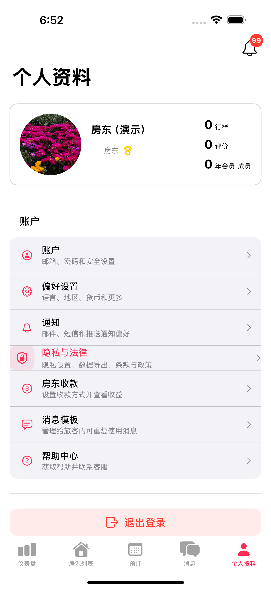 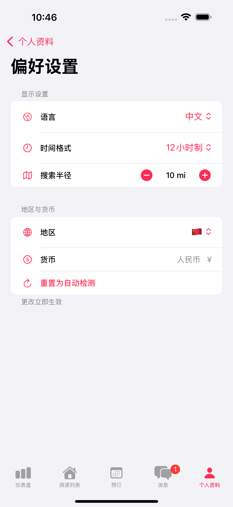
5.2 创建房源 [仅限房东]
房源编辑器使用8格导航网格，您可以按任意顺序跳转各部分。每个完成的部分显示绿色勾号。
创建流程： 房源标签 → “+”按钮 → 完成8个部分 → 预览 → “提交审核”
创建前准备： 您拥有或有权出租该房源、房源符合当地法规和安全要求、有高质量照片、可提供入住说明
5.2.1 房源基础
本部分涵盖向潜在房客描述您房源的基本详情。
房源标题（40-100字符）：描述性、可搜索，突出最佳特色。示例：“La Jolla Cove附近的海滨公寓”
房源类型： 单单元（独栋房屋、公寓、客房）或多单元（酒店、青旅 - 见5.3.4）。注意： 酒店/青旅需至少一个房型/床型
描述（91-1000字符）：详细描述空间、设施、社区和独特之处。绿色计数器表示长度足够
最大房客数：使用 +/- 按钮设置容量（1-20位），影响搜索可见性和定价
房间和床位： 卧室（0-10，工作室选0）、浴室（0.5-10.0，0.5=半浴室，1.0=全浴室）、床位（1-20）
左图：房源基础顶部（标题、类型、描述）；右图：滚动后显示房客数、房间和床位设置
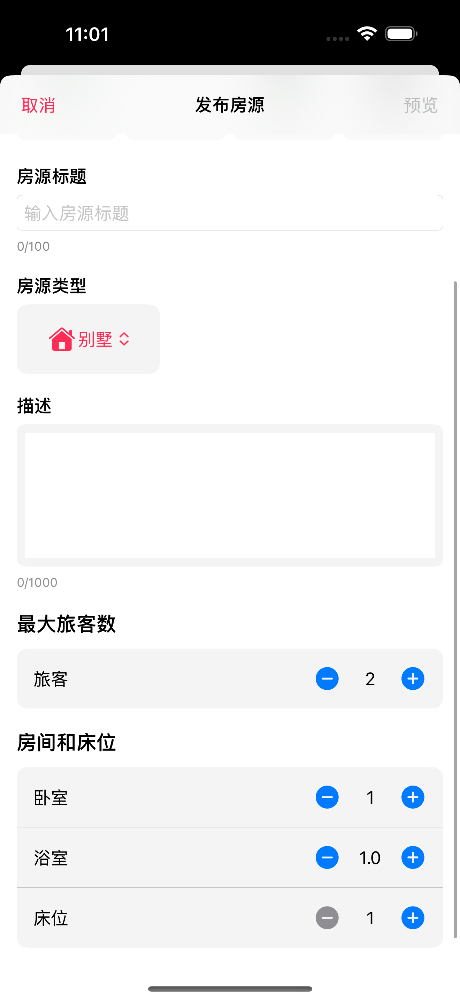
5.2.2 位置
输入您房源的地址和社区信息。地址验证确保地图显示的坐标准确。
地址： 街道地址（必填）、公寓/套房（可选）、城市/州/邮编（必填）- 通过地址验证自动填充
验证地址按钮： 点击”验证地址”确认位置 → 成功显示绿色勾号”✓ 地址已验证”→ 坐标自动设置
社区（必填）：描述社区、附近景点和交通，此字段显示在房源页面上
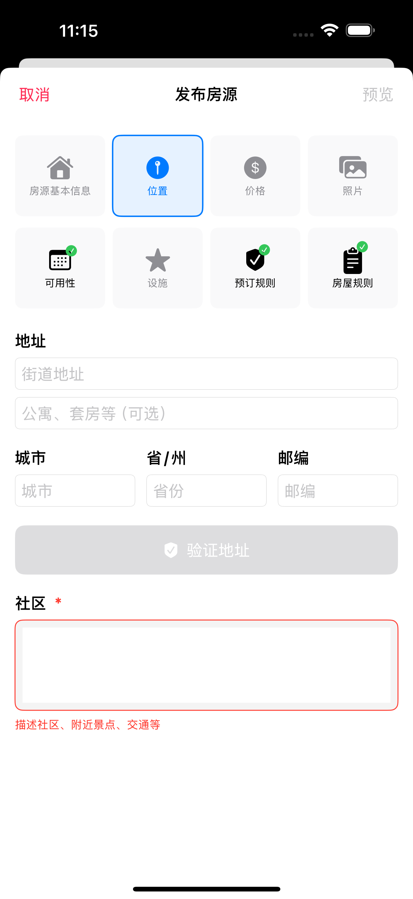
5.2.3 价格
设置每晚房价和可选费用。价格以人民币为单位，向房客显示透明明细。
每晚基础价格（必填）：费用前的每晚房价，输入人民币金额（如200），创建后可按季节调整
清洁费（可选）：一次性费用（非每晚），建议¥50-150，在房客价格明细中单独显示
房客支付： 基础价格×晚数 + 清洁费 + 税费 | 您收到： 基础价格×晚数 + 清洁费 - 平台费（15%-等级%）
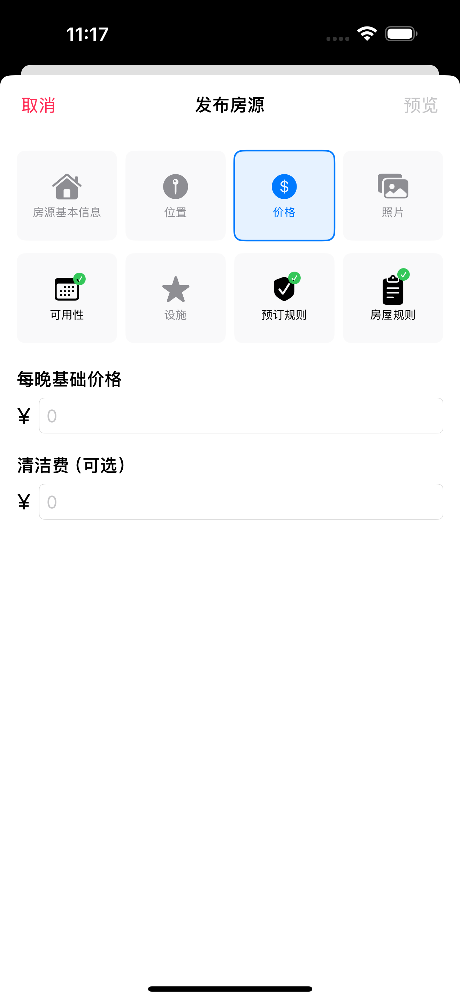
5.2.4 照片
上传房源的高质量图片。照片是预订决策的首要因素。
添加房源照片
- 点击”添加更多”从设备选择照片
- 每张照片上传时显示”新”徽章
- 最少：5张照片（建议：10-20张）
- 最大文件大小：每张10MB
- 支持格式：JPG、PNG
照片提示： 使用自然光、展示所有房间（浴室/厨房/卧室）、从角落拍照展示全景、第一张是封面要精心选择
重新排序： 拖动重新排序，第一张显示在搜索结果，按顺序讲述故事（入口→起居区→卧室→户外）
添加视频（可选）： 粘贴YouTube URL，为房客提供虚拟导览，每个房源最多1个视频
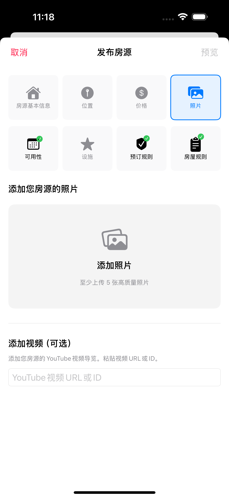
5.2.5 可用性
在创建房源时设置屏蔽日期。高级日历功能（自定义定价、周期规则）在创建房源后可用。
屏蔽日期： 选择房源不可用的日期（注意：完整日历功能将在创建房源后可用）
房源创建后： 完整日历、屏蔽日期范围、自定义定价（节假日/旺季）、最短/最长入住、提前预订窗口、周期可用性规则
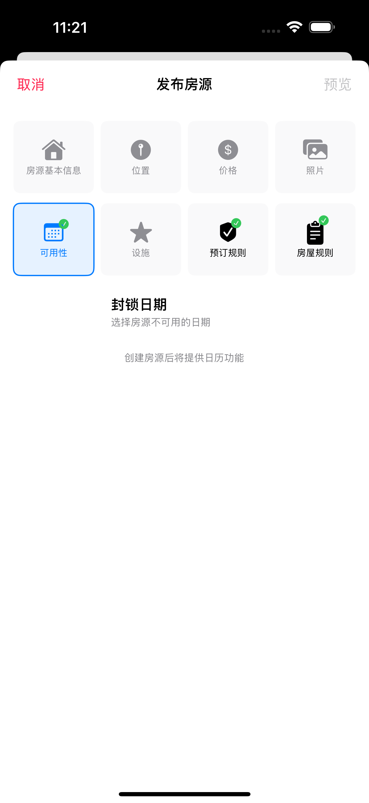
5.2.6 设施与无障碍
选择您房源提供的所有设施和无障碍功能。准确选择可提高搜索匹配度，帮助房客找到满足其需求的房源。
您提供什么设施？
已选设施显示粉色背景和红色勾号：无线网络、厨房、洗衣机、烘干机、电视、阳台、花园、停车位
未选设施显示灰色背景：空调、暖气、泳池、热水浴缸、健身房、壁炉、洗碗机、洗衣、熨斗
无障碍功能： 无台阶入口、宽门、无障碍浴室、扶手、电梯、轮椅无障碍、听力无障碍、视觉辅助、允许服务动物
注意： 设施和无障碍选项从数据库动态加载。
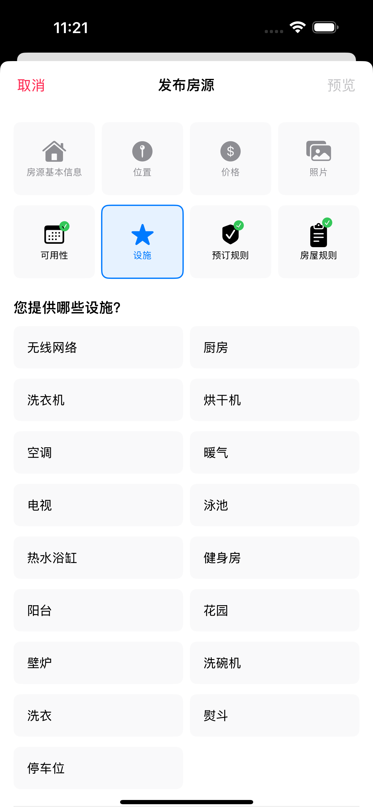 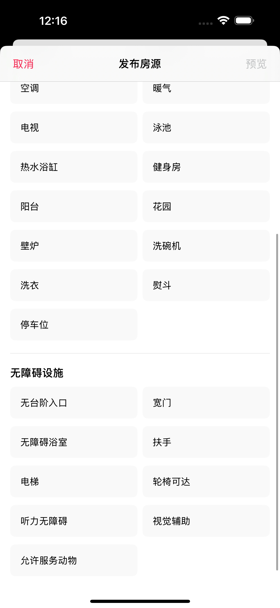
5.2.7 预订规则
配置取消政策、即时预订设置和最短入住要求。
最短入住晚数： 设置最短预订长度（默认3晚，范围1-30晚），创建后可按日期范围调整
取消政策： | 政策 | 全额退款期限 | 部分退款 | 无退款 | |—–|————|———|——-| | 灵活 | 入住前24h+ | - | <24h | | 适中 | 入住前5天+ | 2-5天(50%) | <2天 | | 严格 | 入住前7天+ | 7-30天(50%) | <7天 |
房东取消后果： 客人全额退款、可能被收取费用、影响搜索排名
重要退款规则： 清洁费和税费（入住前取消始终100%退款）、基础价格（根据政策百分比）、服务费（灵活/中等可退，严格不可退）
示例（中等政策，入住前3天取消）： 基础¥200→50%=¥100、清洁¥50→100%、税费¥20→100%、服务费¥28→100% = 总退款¥198
预订偏好
即时预订（开关）：启用后房客可直接预订无需批准，支付自动授权。条件：所有人（不推荐）、已验证房客、回头客、好评房客（>4.5）
自助入住（开关）：启用后房客可自行入住，需提供详细入住说明（密码箱/钥匙/智能锁），说明在到达前24小时自动发送
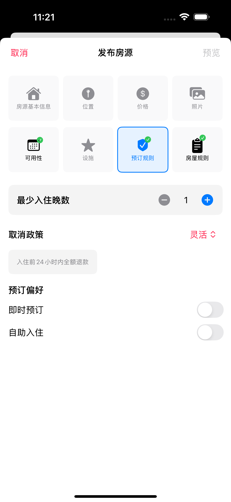
5.2.8 房屋规则
设置入住/退房时间和房源规则以设定房客期望。
入住/退房时间： 默认入住14:00、退房11:00，点击可更改，在预订确认中向房客显示
房屋规则
切换每条规则开/关：允许吸烟（关闭=禁止室内吸烟）、允许宠物（关闭=禁止宠物）、允许派对/活动（关闭=禁止聚会）- 默认：全部关闭（禁止）
安静时间（开关）：启用以强制安静时段 - 开始时间（默认：晚上11:00）、结束时间（默认：早上8:00）- 显示在房源页面的房屋规则中

5.2.9 预览与提交
预览： 点击”预览”（右上角）在提交前查看房客视图
保存行为：
- 创建新房源： 更改仅自动保存到您的设备（不在服务器上）。准备好后点击”提交审核”发送给审核员。
- 编辑活跃房源： 更改自动分类：
- 关键更改（卧室、浴室、容量、房源类型、主要设施）：保存但在审核员批准前对房客不可见（24小时审核）
- 自动批准更改（照片、标题、描述、价格、WiFi密码、入住说明、日历）：立即生效，无需审核
详见5.4.3节了解两级审核系统的完整详情。
5.3 编辑房源
房源标签 → 点击房源 → 三点菜单（⋯）→ “编辑房源”。更改自动分类：关键（卧室、浴室等）需审核员批准，自动批准（照片、价格等）立即生效。
5.3.1 编辑价格与智能定价
基本价格更新： 更新每晚房价和清洁费
智能定价折扣： | 类型 | 适用条件 | 推荐折扣 | |—–|———|———| | 周折扣 | 7-27晚 | 10-20% | | 月折扣 | 28晚以上 | 20-30% | | 即时优惠 | 当日预订（白金/钻石客人） | 30-40% |
规则： 仅适用单个最优折扣，不叠加。
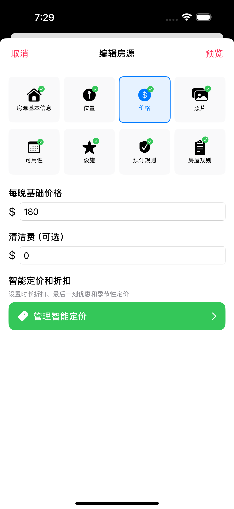 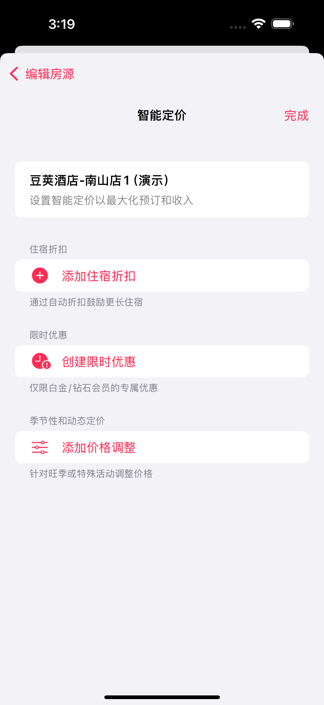
5.3.2 编辑可用性
屏蔽日期： 点击日期 → “屏蔽”按钮 | 取消屏蔽： 点击已屏蔽日期 → “取消屏蔽”
操作按钮： 导入日历（Airbnb/VRBO同步）、周期规则（自动屏蔽）、导出日历
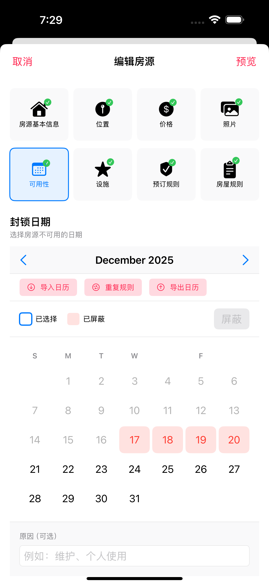
5.3.3 编辑照片与视频
照片： 点击X删除，拖动重排序（第一张=封面），“添加更多”上传新照片
视频： 粘贴YouTube URL → 显示在轮播首位，可提高30%+预订转化率
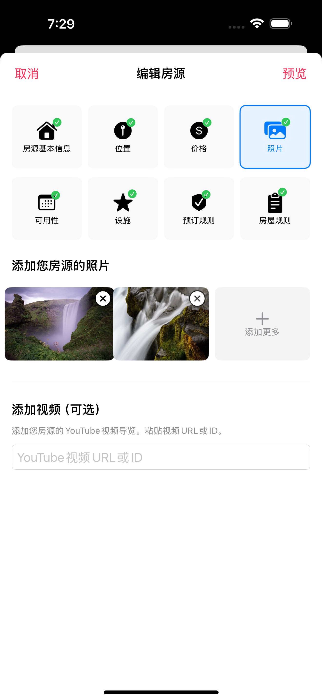
5.3.4 管理房型（仅限酒店/青旅）
功能概述： 酒店、青旅可以定义多个房型或床型，每个都有自己的定价、容量、设施和可用性。
术语：
- 酒店 → “房型”（如标准房、豪华套房）
- 青旅 → “床型”（如4床混合宿舍上铺、女生宿舍单床）
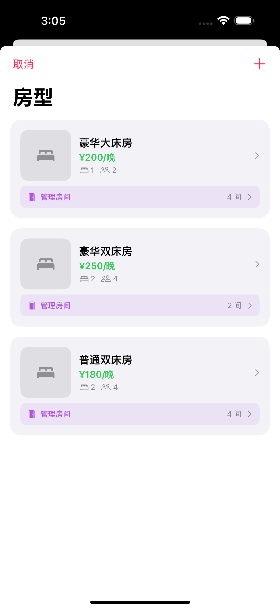 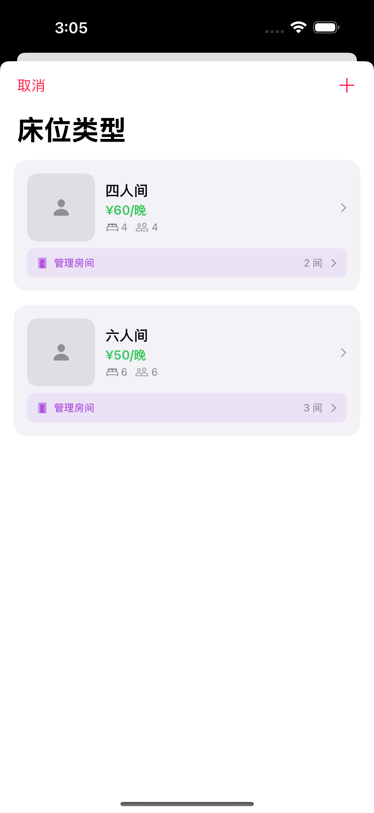
左图：酒店房型列表，显示豪华大床房(¥200/晚)、豪华双床房(¥250/晚)、普通双床房(¥180/晚)；右图：青旅床型列表，显示四人间(¥60/晚)、六人间(¥50/晚)
界面说明：
- 取消 - 左上角，点击返回房源编辑页面
- + - 右上角，点击添加新的房型/床型
- 房型/床型卡片 - 显示名称、每晚价格、床位数量、最大入住人数
- 管理房间 - 点击查看和管理该类型下的具体房间
⚠️ 发布要求： 多单元房源类型（酒店、青旅）在至少有一个活跃房型/床型之前不能发布。如果您尝试在没有房型的情况下提交，会看到验证错误。
为什么房型/床型重要：
与房客预订整个房源的度假租赁不同，酒店和青旅：提供多种单元类型、允许同一日期多个预订、按房型/床型追踪容量、允许不同住宿有不同定价
访问房型/床型管理： 房源标签 → 点击酒店/青旅房源 → 滚动到”房型”或”床型”部分 → 点击”管理类型”
A. 创建房型/床型：
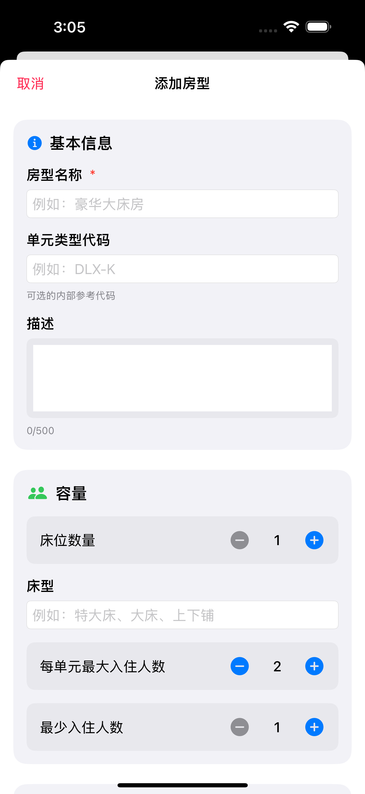 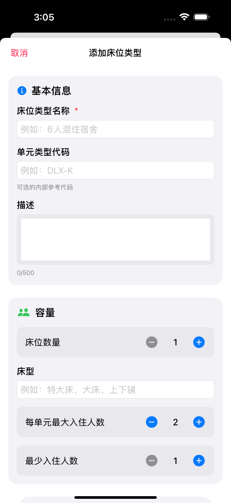
左图：添加酒店房型表单；右图：添加青旅床型表单
表单字段说明：
| 区域 | 字段 | 说明 |
|---|---|---|
| 基本信息 | 房型名称 * | 必填，如”豪华大床房”、“6人混住宿舍” |
| 单元类型代码 | 可选，内部参考代码（如DLX-K） | |
| 描述 | 可选，最多500字符 | |
| 容量 | 床位数量 | 该房型/床型的床位数 |
| 床型 | 如”特大床”、“大床”、“上下铺” | |
| 每单元最大入住人数 | 每个房间/床位最多可住几人 | |
| 最少入住人数 | 最少需要几人才能预订 |
创建步骤： 1. 在房型/床型列表页点击右上角 + 按钮 2. 填写房型/床型名称（必填） 3. 设置床位数量和入住人数 4. 继续滚动设置价格、库存等信息 5. 点击保存
B. 编辑房型/床型： 点击卡片 → 修改字段 → 保存。可编辑：名称、总单元数、容量、价格、描述、设施、照片。注意： 有活跃预订时不能减少单元数低于预订数。
C. 可用性和容量：
容量如何运作： 每个房型/床型有自己的容量（总单元数）→ 多位房客可同一日期预订相同类型 → 系统自动追踪预订vs总数 → 数据库级别防止超额预订
示例：
豪华大床房：总共5个单元
- 预订1：房客A预订1间（12月1-3日）→ 剩余4间
- 预订2：房客B预订2间（12月1-3日）→ 剩余2间
- 预订3：房客C尝试预订3间（12月1-3日）→ 被阻止（仅2间可用）查看可用性： 每个房型/床型显示当前可用性 - 绿色（可用）、黄色（有限）、红色（已满）- 点击”查看日历”查看详情
D. 停用/删除房型/床型：
停用（临时）： 点击房型 → 关闭”活跃”开关 → 不再接受新预订（现有预订有效）→ 可随时重新激活
删除（永久）： 点击房型 → 点击”删除” → 确认。注意： 有活跃预订则不能删除
E. 酒店/青旅最佳实践： 使用清晰名称（“带阳台的豪华大床房”比”A房间”好）、添加房型特定照片、战略性定价、定期监控可用性、保持描述准确更新
常见房型示例（酒店）： 标准双床房、豪华大床房、带客厅的套房、家庭房、无障碍房
常见床型示例（青旅）： 4床混合宿舍上铺、6床女生宿舍上铺、8床混合宿舍单床、私人单人间、私人双人间
F. 理解设施与搜索影响：
两种类型的设施：
| 设施类型 | 在哪里设置 | 适用于 | 示例 |
|---|---|---|---|
| 共享设施 | 房源编辑器 → 设施 | 所有房型/床型 | 泳池、健身房、餐厅、大堂WiFi |
| 房型设施 | 房型编辑器 | 仅特定房型 | 阳台、迷你吧、独立卫浴、室内保险箱 |
组合设施在搜索中如何工作：
当房客使用设施筛选搜索时，系统检查：
组合设施 = 共享设施 ∪ 房型设施示例：
- 您酒店的共享设施： WiFi、泳池、健身房、餐厅
- 豪华房设施：阳台、迷你吧
- 标准房设施：（无）
豪华房组合 = WiFi、泳池、健身房、餐厅、阳台、迷你吧 标准房组合 = WiFi、泳池、健身房、餐厅
搜索影响：
- 房客搜索”WiFi + 泳池” → 两种房型都匹配 ✅
- 房客搜索”WiFi + 阳台” → 仅豪华房匹配 ✅
- 房客搜索”厨房” → 都不匹配 ❌
重要： 如果房客筛选的设施仅在某些房型中存在，您的房源将仅显示那些匹配的房型作为选项。
设施最佳实践： 全房源设施添加到共享设施（房源编辑器）、房型特定设施添加到房型、不要重复（如泳池是共享的不要添加到每个房型）、要准确（房客期望您列出的内容）
G. 房客如何在搜索中看到您的房源：
对于多单元房源，搜索结果显示：房源卡片（每房源一个）、“从¥X/房间”或”从¥X/床位”（最便宜匹配房型）、主房型名称、共享徽章（超级房东、即时预订等）
什么决定主房型： 必须匹配房客所有筛选（价格、房客、床位、设施）、必须在所选日期可用、匹配类型中最便宜的显示
示例： 房客搜索：¥100-¥200，2位房客，WiFi
您的酒店有：
- 标准房：¥120，2位房客，WiFi ✅ 匹配
- 豪华套房：¥180，4位房客，WiFi ✅ 匹配
- 行政套房：¥350，4位房客，WiFi ❌ 超出价格筛选
结果： 您的房源显示为”从¥120/房间 — 标准房”
H. 查看房型预订：
在预订标签中，酒店/青旅预订显示：房源名称、房型/床型名称、预订单元数、房客姓名和日期、总收款
预订详情显示： 房型及描述、预订房间/床位数、每单元和总价明细、分配的单元号
5.4 房源审核与批准流程 [仅限房东]
了解房源状态和编辑如何被审核有助于您有效管理房源。
5.4.1 房源状态
您房源的状态决定房客是否可以看到和预订。
| 状态 | 含义 | 房客可见？ | 可预订？ | 您的操作 |
|---|---|---|---|---|
| 待审核 | 新房源已提交，等待审核员批准 | ❌ 否 | ❌ 否 | 等待审核员审核（24-48小时） |
| 请求修改 | 审核员退回要求修改 | ❌ 否 | ❌ 否 | 进行请求的修改，然后立即重新提交 |
| 活跃 | 已批准并在平台上线 | ✅ 是 | ✅ 是 | 管理预订，可随时暂停 |
| 活跃（待审核编辑） | 活跃房源有关键编辑等待审核员批准 | ✅ 是（显示旧批准数据） | ✅ 是 | 等待审核员审核您的更改 |
| 您暂停的 | 您临时禁用了它 | ❌ 否 | ❌ 否 | 准备好时取消暂停（无需重新审核） |
| 审核员暂停的 | 审核员发现上线房源问题 | ❌ 否 | ❌ 否 | 修复问题，然后重新提交审核 |
| 已拒绝 | 审核员永久封锁此房源 | ❌ 否 | ❌ 否 | 修复问题并立即重新提交，或通过聊天申诉 |
| 已归档 | 您永久移除了它 | ❌ 否 | ❌ 否 | 无法恢复 |
重要说明：
无草稿状态： 创建中的房源仅保存在设备上，提交后创建状态为”待审核”。
有待审核编辑的活跃房源： 编辑关键信息时房源保持活跃可预订，房客看到旧的批准信息直到新更改被批准。
5.4.2 新房源提交工作流程
创建您的第一个房源：
开始创建： 在编辑器中开始填写房源详情（进度仅自动保存到设备，可退出继续）
提交审核： 完成后点击”提交审核”→ 房源状态变为待审核→ 您将收到通知
审核员审核（24-48小时）：
选项A：批准 → 状态变为活跃，房源上线可预订
选项B：请求修改 → 状态变为请求修改，您收到具体反馈（照片、描述、设施、定价等）→ 修改后重新提交
选项C：拒绝 → 状态变为已拒绝（欺诈、违规、重复等）→ 修复后重新提交或申诉
5.4.3 编辑活跃房源：两级审核系统
一旦您的房源活跃，编辑分为两类。这平衡了您的自主权和质量控制。
🔴 关键更改（需要审核员重新批准）
这些从根本上定义房客预订的内容。更改需要审核员批准后才能上线。
示例：
- 房源类型（独栋房屋 → 公寓）
- 卧室数量
- 浴室数量
- 最大房客容量
- 位置/地址
- 主要设施（泳池、热水浴缸、停车、空调/暖气、厨房、洗衣机/烘干机、无障碍功能）
发生什么： 保存后房源保持活跃可预订 → 房客看旧批准信息 → 审核员24小时内审核 → 批准后更改上线 / 拒绝则保持旧信息
重要： 待审核期间的预订基于旧批准信息，您必须履行。
✅ 自动批准更改（立即上线）
所有其他不从根本上改变房客预订内容的更改。更新立即上线，无需审核员审核。
示例： 照片/视频、标题、描述、价格、清洁费、取消政策、最短/最长入住、次要设施、WiFi密码、门禁码/入住说明、本地推荐、社区指南、停车说明、垃圾/回收信息、日历可用性
发生什么： 您保存更改 → 立即上线 → 房源保持活跃 → 房客立即看到新信息 → 无需审核
5.4.4 管理活跃房源
批准后，您有完全控制权：
自行暂停： 点击”暂停房源”临时禁用，随时取消暂停无需重新审核
审核员暂停： 审核员发现问题后暂停，修复后重新提交，24小时内审核
归档： 永久移除，无法恢复，预订历史保留用于税务记录
5.4.5 评价审核员
房源获批后，您可以对审核员的服务进行评价。
评价入口： 收到审批通知后 → 点击”评价审核员”
评价项目： | 项目 | 说明 | |—–|——| | 综合评分 | 1-5星整体满意度 | | 帮助度 | 反馈是否有建设性 | | 响应速度 | 审核是否及时 | | 专业度 | 沟通是否专业 | | 文字反馈 | 可选，具体意见 |
💡 您的反馈帮助我们改进审核服务质量
5.5 处理预订请求
房东和联合房东都可以批准或拒绝预订请求。
5.5.1 接收预订通知
即时预订： 启用后房客可直接预订（支付自动授权，无需批准）。配置：房源编辑器 → “预订设置”
非即时预订： 房客申请 → 您收到通知 → 预订显示在”待处理”→ 24小时内回复
5.5.2 查看预订
访问所有预订，包括在预订标签中等待您批准的预订。按状态筛选以专注于需要关注的内容。
搜索与筛选： 搜索栏按房客/房源/确认号查找 | 筛选标签：待处理、即将到来、今天、全部
预订卡片显示： 房源照片、标题、房客姓名、状态徽章（橙色待处理/绿色已确认）、入住/退房日期、房客数量、收款金额、确认号、三点菜单
谁看到什么： 房东看所有预订，联合房东仅看指定房源的预订
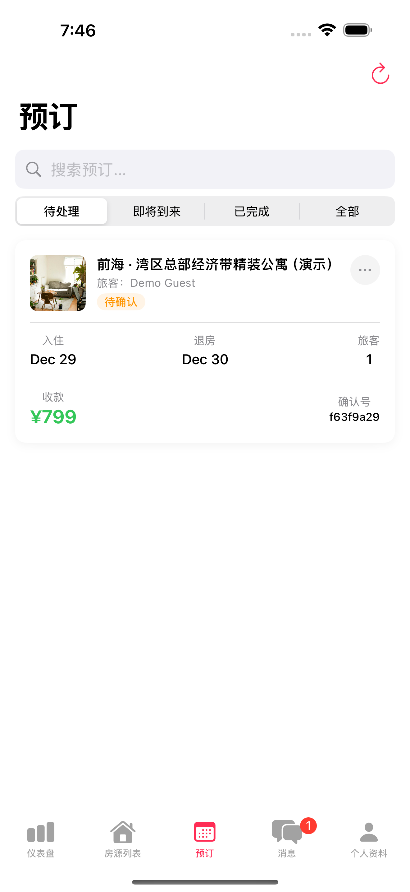 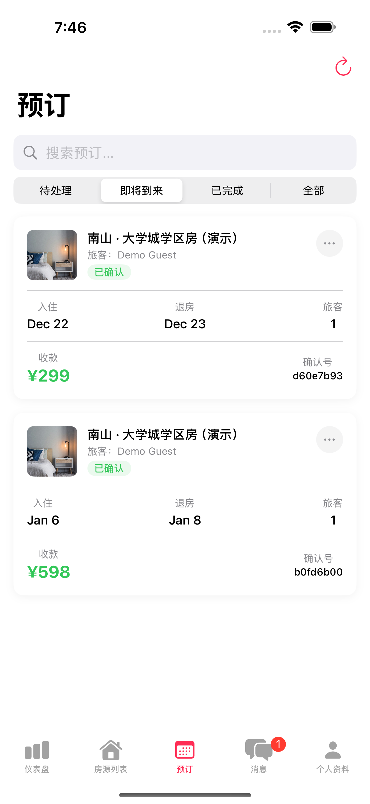
5.5.3 批准或拒绝预订请求
当房客申请预订时： 1. 房客提交预订请求 2. 您收到通知 3. 查看房客资料、评价和消息 4. 您有24小时回复
操作方式： 三点菜单或预订详情页面 → 点击”批准”（绿色）或”拒绝”（红色）
批准后： 房客扣款 → 预订确认 → 入住后您收到收款 → 日历自动更新
拒绝后： 房客收到通知（不扣款）→ 日历日期释放
左图：待处理预订详情（待批准）；右图：已确认预订详情（显示完整价格明细、入住/退房日期、房客信息）
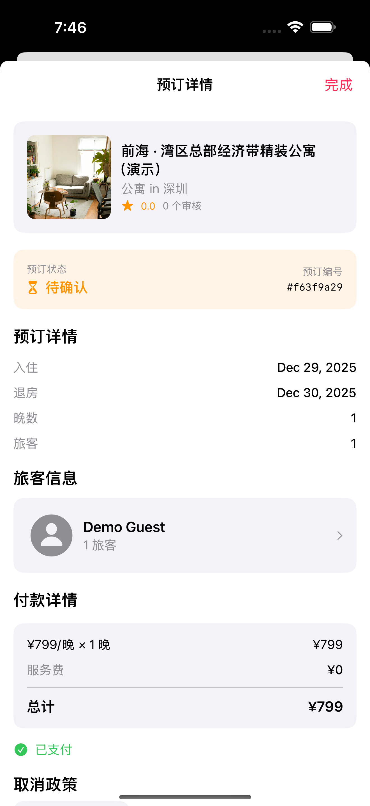 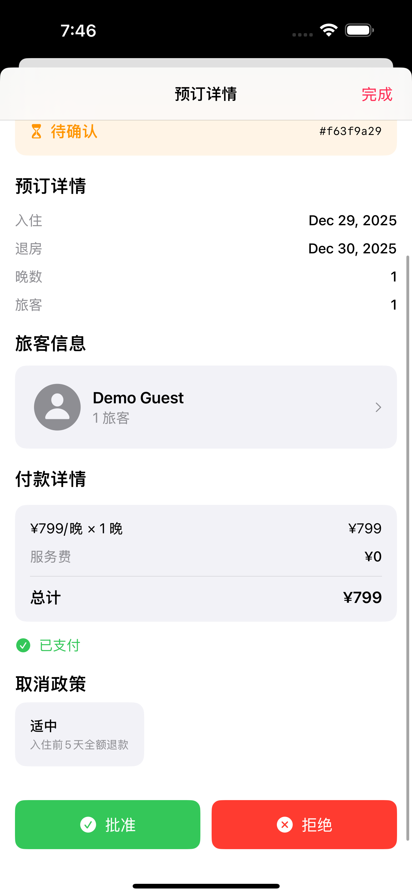
注意： 高级预订修改功能包括自动重新安排，系统会自动调整清洁任务和日历。
5.6 团队管理 [仅限房东]
团队角色： 房东（完全控制，包括定价和收款）、联合房东（管理房源/回复房客/编辑详情，定价除外）、保洁员（查看/完成清洁任务、管理可用性）
功能： 邮件邀请、基于角色的权限、消息归属、自动分配清洁任务、分析筛选、活动日志
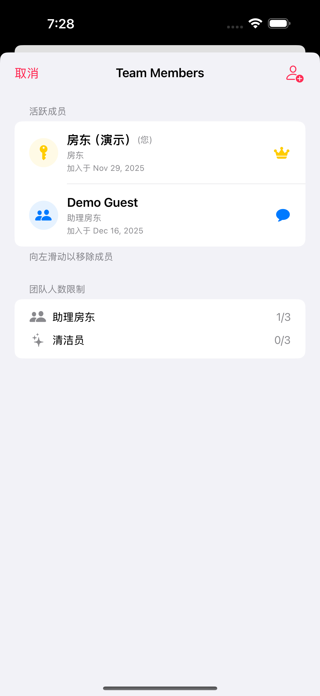
5.6.1 邀请团队成员 [仅限房东]
房源 → “团队成员” → “邀请成员” → 输入邮箱、选择角色（联合房东/保洁员）→ 发送邀请 → 在团队标签中跟踪
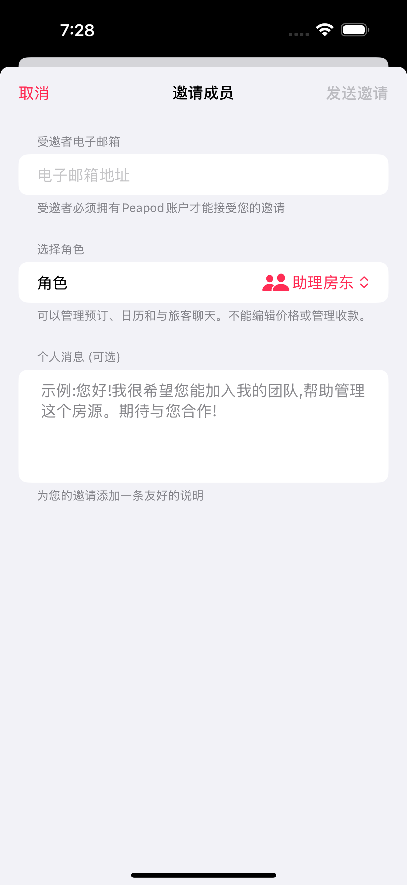
5.6.2 查看团队成员 [仅限房东]
团队列表显示： 房东（👑金色）、联合房东（👤蓝色）、保洁员（✨绿色）- 显示姓名、头像、邮箱、添加日期、状态（活跃/待处理）- 按角色筛选，按日期或姓名排序
5.6.3 编辑或移除团队成员 [仅限房东]
编辑： 点击成员 → “编辑角色” → 更改联合房东/保洁员 → “保存” → 成员收到通知
移除： 点击成员 → “从团队移除” → 确认 → 立即失去访问权限，成员收到通知
说明： 只有房东可以移除成员。您不能移除自己。移除保洁员会取消任务，移除联合房东会移除消息归属。
5.6.4 成为联合房东 [联合房东]
查收邀请邮件 → 点击”接受邀请” → 房源出现在”房源”标签中（带👤蓝色徽章）
5.6.5 保洁员角色与任务管理 [仅限房东]
可以做： 查看/完成任务、上传照片、报告问题 | 无法访问： 房客消息、预订详情、定价、收款信息
5.6.6 按团队成员的分析与表现 [仅限房东]
跟踪团队成员表现：响应时间、消息数量、预订转化率、房客满意度、活动日志（全部可按团队成员筛选）
5.6.7 角色徽章与视觉指示器
房东（👑金色 - 完全控制）、联合房东（👤蓝色 - 管理房源，无定价权限）、保洁员（✨绿色 - 仅任务管理）| 出现在： 团队列表、消息、活动日志、房源列表、分析仪表板
5.6.8 房源活动日志
记录： 房源编辑、日历更改、发送的消息、预订状态、团队更改、完成的任务、评价回复、设置更新
5.7 房客沟通与评价
5.7.1 消息模板
[联合房东说明]： 完全访问模板，消息显示”由[您的姓名]发送”
预写模板带变量替换，用于入住说明、房屋规则、推荐、定价、常见问题。
常用变量： | 变量 | 说明 | |—–|——| | {{guest_name}} | 客人名字 | | {{listing_title}} | 房源名称 | | {{check_in_time}} | 入住时间 | | {{wifi_password}} | WiFi密码 | | {{access_method}} | 入门方式 |
功能： 10个默认模板、使用跟踪、一键快速发送、可自定义、按类别组织
5.7.2 评价与评分
接收房客评价：
回复评价： 感谢房客、建设性回应、保持专业。避免争论或分享个人信息。
评价房客流程：
房客退房后，您可以为房客撰写评价。评价在双方都提交或14天后发布。
- 进入”预订”标签页
- 点击”已完成”筛选标签
- 找到已完成的预订，点击”评价房客”按钮（如已评价则显示”编辑评价”）
- 填写星级评分（1-5星）
- 撰写评价内容（可选）
- 添加照片（可选，最多10张）
- 点击”提交评价”
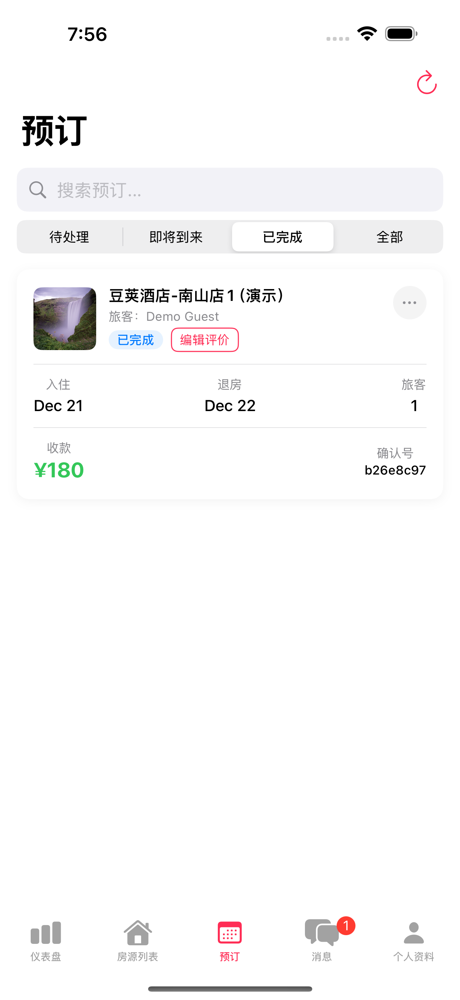 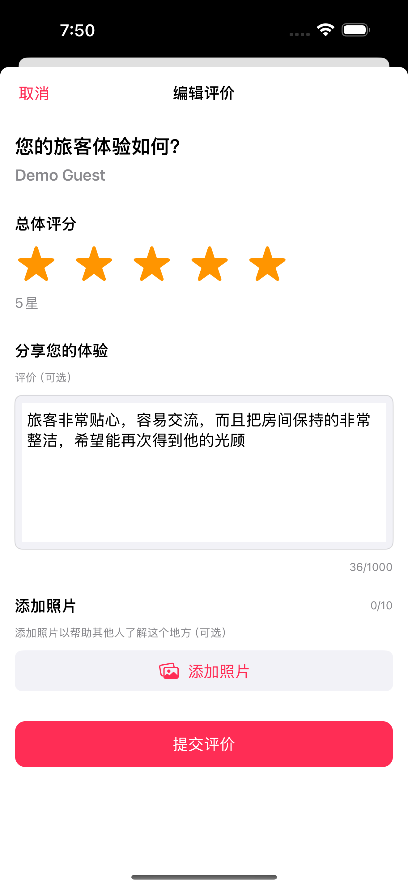
左图：已完成预订列表（显示”编辑评价”按钮）；右图：评价表单（星级评分、文字评价、照片上传）
评价时限： 退房后开放，14天后关闭。评价在双方都提交或14天期限结束后公开发布。
5.8 收入与忠诚度 [仅限房东]
5.8.1 收入如何运作（中国版1.0）
房客支付： 基础价格 + 清洁费 + 税费（无服务费）| 您收到： 基础价格 + 清洁费 - 平台费（11.5%-13%）
房东平台费 = 15% - 等级折扣率（2%-3.5%）。示例（金牌）：¥650小计 - 12.5%费用 = 您收到¥568.75
5.8.2 收款时间表
入住后24小时释放，3-5个工作日到账。方式：银行转账、PayPal、Stripe Connect（默认）。
房东收款页面： 可提款余额、“连接Stripe”按钮、收款历史列表（金额/日期/状态）
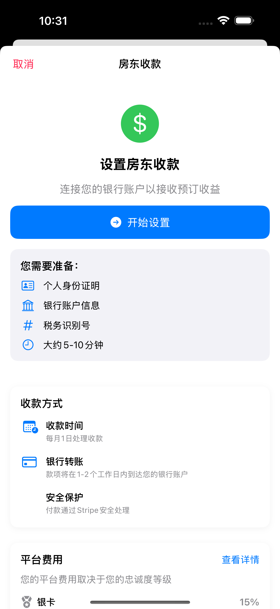
5.8.3 查看收入
5.8.4 税务信息
您需自行申报收入。中国房东需按照当地税务规定申报个人所得税。下载收入报表：“收入” → “税务文件”
5.8.5 房东忠诚度计划
基于预订总收入（费用前）赚取积分，入住后计入。兑换旅行折扣。永不过期。100积分 = ¥1人民币。
等级（年收入，每年重置）： | 等级 | 年收入 | 积分率 | 平台费 | |——|——–|——–|——–| | 银牌 | ¥0+ | 2.0% | 13.0%（15% - 2%） | | 金牌 | ¥50k+ | 2.5% | 12.5%（15% - 2.5%） | | 铂金 | ¥250k+ | 3.0% | 12.0%（15% - 3%） | | 钻石 | ¥500k+ | 3.5% | 11.5%（15% - 3.5%） |
按等级主要福利： 银牌（标准客服）、金牌（优先客服、精选展示）、铂金（高级客服、网络研讨会、抢先体验）、钻石（24/7 VIP、专属客户经理、定制营销）
注意： 更高等级获得更多积分和更低平台费。等级折扣率有双重作用。
示例： ¥1,000预订，金牌等级：赚取25积分（2.5%）、平台费12.5%、您收到¥875
5.9 房东资源
5.9.1 清洁任务管理
房东快速参考： 自动任务（退房 → 下次入住）、手动任务（任何时候）、智能分配、在团队标签监控进度/评分
自动分配评分因素：
- 当前工作量（40%）
- 绩效评分（30%）
- 截止日期可行性（20%）
- 距离（10%）
紧急警报： 入住前<3小时任务未开始 = 🔴紧急
5.9.2 房东与房源徽章
在个人资料、房源、搜索结果和消息中显示的视觉信任指标。
房东品质徽章（自动）： 超级房东（4.8+评分、90%+响应率、<1%取消率、10+预订）、即时回复（95%+响应率、<1小时）、资深房东（50+预订、1+年）、顶级房东（城市前10%、4.9+、100+预订）
房源特色徽章（管理员验证）： 可持续住宿（太阳能、电动汽车充电、节能电器）、远程工作就绪（50+Mbps WiFi、专用工作区）、宠物友好认证（允许宠物、宠物设施）、家庭友好认证（儿童设施、安全功能）、豪华住宿（高端设施、>¥300/晚、4.9+评分）
申请： 房源编辑器 → 徽章 → 上传文件 → 提交 → 管理员审核（3-5天）
5.9.3 房东表现与超级房东状态
绩效指标： 响应率（24小时内%）、响应时间（平均小时）、接受率、总体评分、取消率 | 目标： 90%+响应（目标：100%）、<1小时回复（目标：<10分钟）、90%+接受、4.5+星（目标：4.8+）、<1%取消
超级房东状态： 精英季度认可，带徽章、更高搜索排名、优先支持
要求： 10+预订或100+晚、90%+响应/接受（或即时预订）、4.8+评分、<1%取消 | 评估： 每季度（1月/4月/7月/10月）、过去12个月、自动 | 福利： 徽章、更高搜索排名、优先支持、独家奖励、更高房客转化
5.9.4 支持与帮助
帮助中心： 房东仪表板 → “帮助”或应用内菜单 → “帮助中心”
联系客服： 应用内聊天（24/7，最快）、邮件（support@peapodhotels.com）、电话（即将推出）
房东社区：（即将推出）